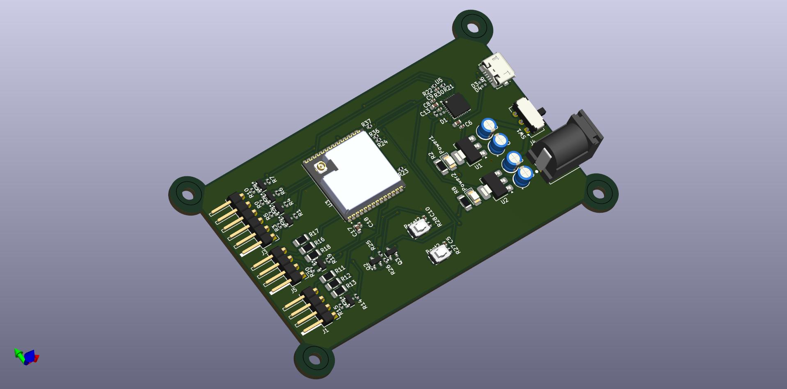

Air
Quality
Air quality is the invisible infrastructure of health and opportunity.
Clean air means fewer hospital visits, sharper minds, and longer lives—especially
for kids and elders. Measure it, publish it, fix it. The future breathes with us.

About the project
Our challenge is simple: help as many people as possible make safer,
healthier choices every day. This project has two parts that work together:
a mobile app that personalizes air-quality guidance, and a companion device
(working name) that measures local air when there’s no internet or cell signal.
The mobile app turns satellite observations from NASA into practical, real-time
advice. It shows current air quality, short-term trends, and clear recommendations
tailored to each user. With your consent, you can add details like age, respiratory
or heart conditions, pregnancy, outdoor work hours, or training goals. The app then
adjusts alerts to your profile—sending notifications such as “Great air today—perfect
for a run,” or “Unhealthy for sensitive groups—limit outdoor time and consider a mask.”
You choose alert times and thresholds; your data is kept private and used only to improve
your guidance.
For communities without reliable signal or Wi-Fi, we are building an offline air-quality
monitor (name TBD). It uses onboard sensors to read key pollutants and displays an
easy-to-understand status on the device itself, so anyone nearby can see current
conditions. When a phone is in range, it can share data locally (e.g., via Bluetooth)
so people can still get personalized tips—no mobile data required.

Services from the app
The Breathe mobile application serves as an intelligent interface for the Python-based server, enabling users to receive filtered and personalized air quality information according to their location and individual profile.
When the user launches the app, they are asked to provide basic personal details and to grant access to their current GPS location.
This information is securely transmitted to the server, which then identifies the user’s position and defines a surrounding area of approximately 50 kilometers for data analysis.
Within this area, the server aggregates and processes environmental information obtained from:
• NASA TEMPO satellite data
• Local IoT measurements from nearby Breathe Nodes
• Meteorological data
Design
The Air Quality Monitoring PCB is a custom-designed electronic board built around the
ESP32-WROOM-32UE microcontroller. It serves as a compact and efficient hardware platform
for collecting and transmitting environmental data over Wi-Fi. The PCB integrates multiple
sensor interfaces and power management components to ensure stable operation and accurate
measurements. The design prioritizes:
- Ease of assembly: plug-and-play sensor sockets.
- Signal integrity: proper routing and isolation
for analog readings.
- Wireless communication: through the integrated Wi-Fi module of the ESP32.
- Compact form factor: suitable for enclosure integration and prototyping.
ESP32-WROOM-32UE: Main processing and communication unit, responsible for reading sensor data
and transmitting it wirelessly.
Sensor sockets:
- PMS5003 – for particulate matter measurement (PM1.0, PM2.5, PM10). MQ131 – for ozone (O₃)
detection.
- MQ-4 – for methane (CH₄) and combustible gas sensing.
- Voltage regulation stage:
Ensures stable 5V and 3.3V power supply to sensors and microcontroller.
- Programming and debugging
header: Allows firmware upload and serial monitoring.
- Status indicators: LEDs for power and Wi-Fi
connection status.
The PCB is powered via a standard 9V ot 12V input, with onboard regulation to 3.3V for the ESP32
and 5V for the Sensors. All communication with external systems occurs through Wi-Fi, using the
ESP32’s internal antenna and u.FL connector for external antennas when longer range is required.
When the design of this project was conceived, it was taken into consideration that the best
option would be to make it visually friendly for any type of person, from an industrial worker
to a five-year-old child. Since it’s not designed just to use it in a factory, but rather to
adapt to any environment, such as a home or a park.
The design of the casing and the assembly of the project were carried out in SolidWorks, a CAD
design software that offers multiple functions, including 3D part modeling. It was considered
as one of the most complete and suitable softwares for this application and it is already used by
a lot of universities who teach 3d modeling to their students.
On the other hand, the PCB design was done with KiCad, which was chosen because it is a free
open-source software that is made for the design of circuit schematics and printed circuit boards
in an intuitive and visually appealing way.
333
